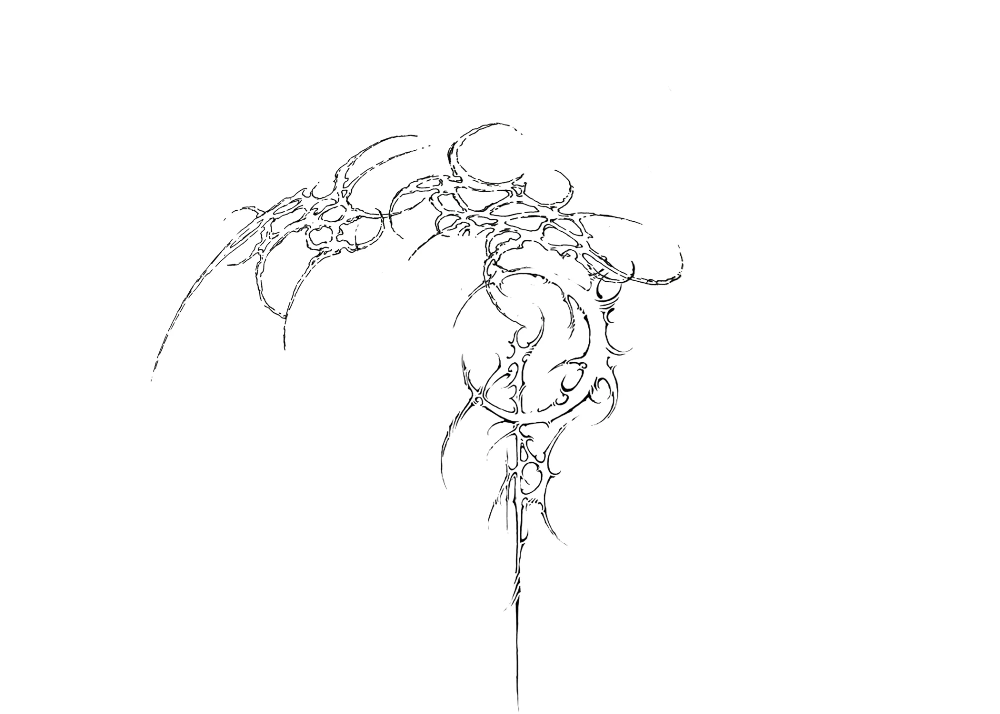

Drive control
Split/single arcade or tank, joystick curves, every button in one file, and a Down + B auton test.

Reaper is a VEX V5 template that includes MCL, odometry, autonomous selection and custom driver controls. Built on EZ-Template. Huge shout-out to the EZ team.
Features
Built and tested on 4588G's robots. Every port and button lives in one file, so new team members can set it up fast.
Split/single arcade or tank, joystick curves, every button in one file, and a Down + B auton test.
EZ-Template's drive, turn and swing PID, with exit conditions reworked to catch a robot that's stuck or pushed.
Tracking wheels and IMUs, with up to four distance sensors correcting X/Y against the field walls.
A background lift controller with presets and fault checks, plus lift, claw and piston sequences.
Scythe splash, then a touch dashboard: 15 match + 3 skills routes, red/blue, motor and sensor pages.
Motor monitor, IMU motion monitor for hits, tipping and lift sway, and clear startup messages.
Reaper does the hard work for you. You just write what the robot is doing.
ez::Auton match_01() {
return {"Right Side", "Score, then grab the stack", [] {
chassis.pid_drive_set(36_in, 100);
chassis.pid_wait_until(12_in); // checkpoint
chassis.pid_speed_max_set(60);
chassis.pid_wait_quick_chain(); // flow into the turn
chassis.pid_turn_set(90_deg, 80);
chassis.pid_wait();
chassis.pid_odom_set(ez::united_odom{{24_in, 36_in}, ez::fwd, 80});
chassis.pid_wait();
}};
}
// One line puts it on the brain-screen selector
ez::as::auton_selector.autons_add({match_01(), match_02()});
Started as an edited version of EZ-Template and turned into so much more.